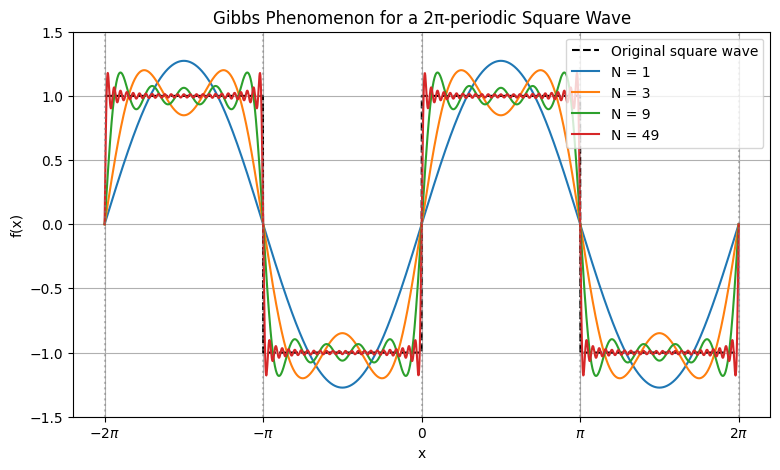
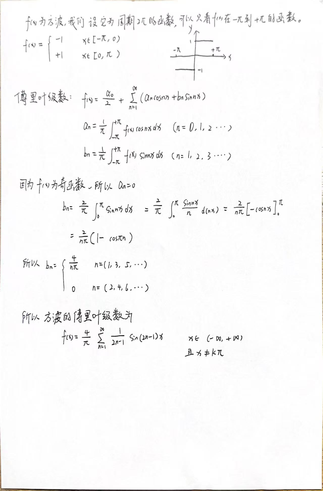
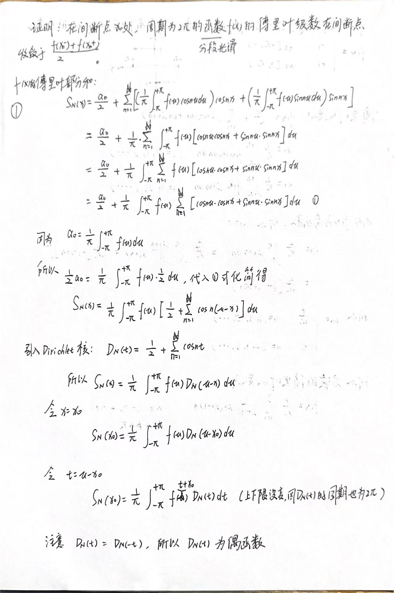
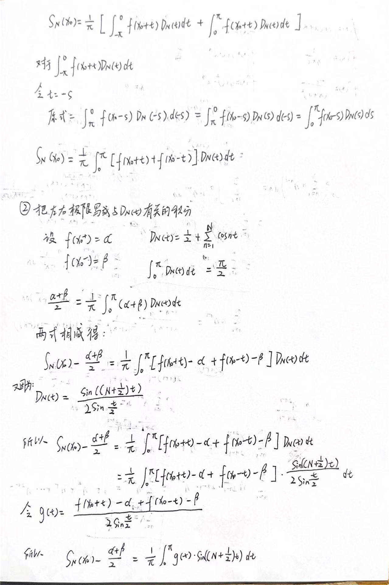
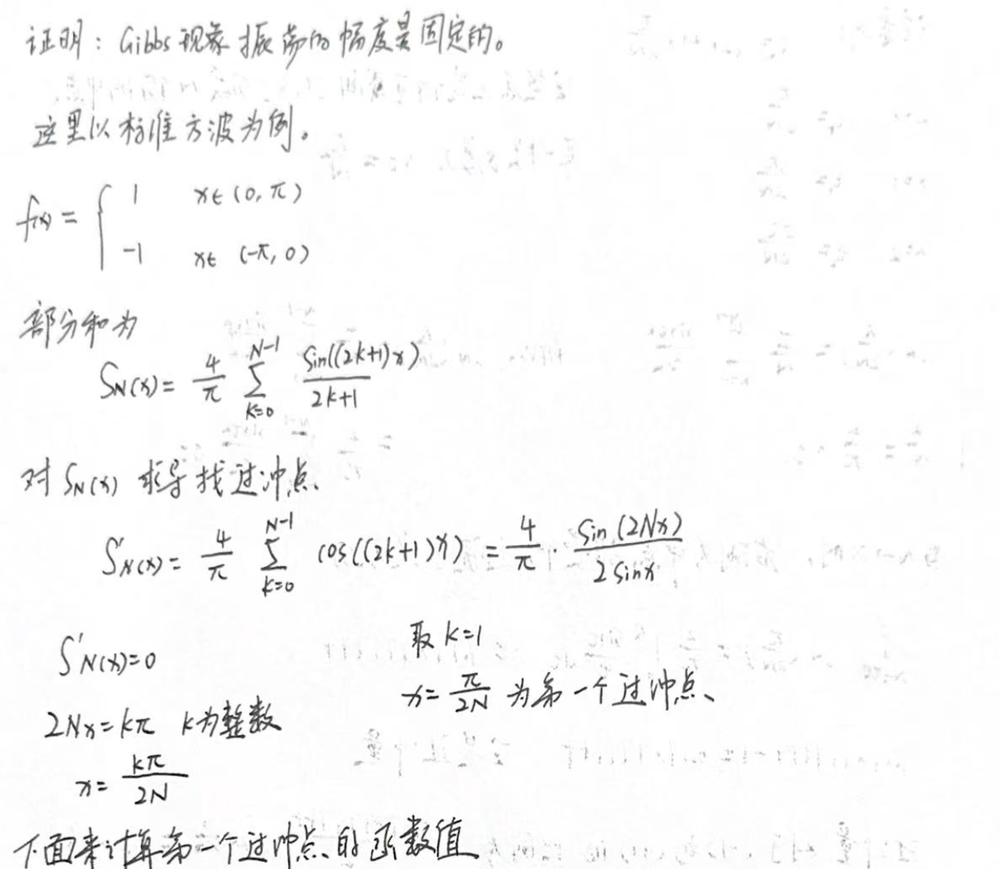
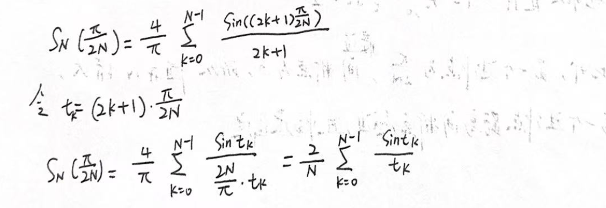
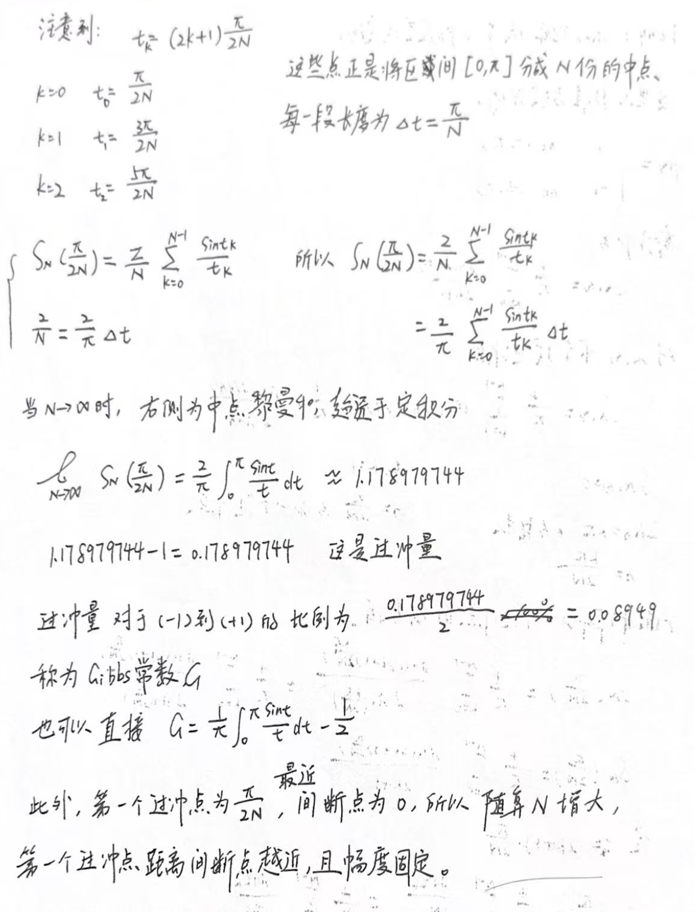
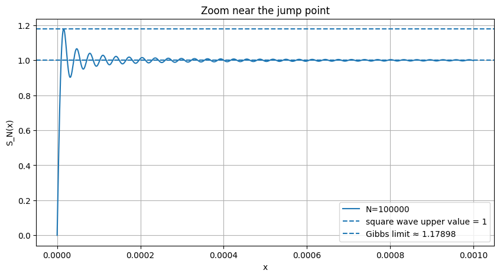

1 背景
傅里叶级数在第一类间断点的收敛情况
设 是 的第一类间断点，则其傅里叶级数在该点收敛于：
其中 和 分别表示右极限和左极限。
在这个 blog 中我将会证明为什么傅里叶级数在间断点的值等于函数f(x)在该间断点的左右极限之和的一半。
(LaTeX 感觉不是很习惯， 下面我将在纸上进行书写)
吉布斯现象(Gibbs Phenomenon)
存在第一类间断点的周期函数由傅里叶级数去表示时，在间断点附近会出现振荡现象，这种现象称为吉布斯现象。图1是下面代码的运行结果。其中这个方波是一个周期为 2π 的函数，在 kπ 处为间断点，横坐标中我标注出了 5 个间断点：-2π, -π, 0, π, 2π。我们可以从图中看到，在间断点附近，傅里叶级数会冒出来一部分高的（过冲 overshoot），也会低出来一部分（低冲 undershoot），这就是吉布斯现象。注意，吉布斯现象是出现在间断点附近哦，并不是间断点，在间断点，傅里叶级数是收敛于函数f(x)在该间断点的左右极限之和的一半。除此之外，这个震荡现象并不会随着傅里叶级数的项数的增加而减小，而是随着傅里叶项数的增加，最大过冲点的横坐标逐渐靠近间断点的横坐标，并且最大过冲值是逐渐趋近于一个定值，在这个 blog 中我将会以方波为例子证明（方波证明起来比较简单，一般函数的比较复杂，哈哈哈）。
吉布斯现象的代码演示：
1
2
3
4
5
6
7
8
9
10
11
12
13
14
15
16
17
18
19
20
21
22
23
24
25
26
27
28
29
30
31
32
33
34
35
36
37
38
39
40
41
42
43
44
45
46
47
48
49
50
51
52
| import numpy as np
import matplotlib.pyplot as plt
x = np.linspace(-2 * np.pi, 2 * np.pi, 2000)
def square_wave_periodic(x):
y = np.where(np.sin(x) >= 0, 1.0, -1.0)
y[np.isclose(np.sin(x), 0, atol=1e-12)] = np.nan
return y
square_wave = square_wave_periodic(x)
def fourier_square_wave(x, N):
y = np.zeros_like(x)
for n in range(1, N + 1, 2):
y += (4 / np.pi) * np.sin(n * x) / n
return y
terms = [1, 3, 9, 49]
plt.figure(figsize=(9, 5))
plt.plot(x, square_wave, 'k--', label='Original square wave')
for N in terms:
y = fourier_square_wave(x, N)
plt.plot(x, y, label=f'N = {N}')
for k in range(-2, 3):
plt.axvline(k * np.pi, color='gray', linestyle=':', alpha=0.5)
plt.title('Gibbs Phenomenon for a 2π-periodic Square Wave')
plt.xlabel('x')
plt.ylabel('f(x)')
plt.ylim(-1.5, 1.5)
plt.xticks(
[-2*np.pi, -np.pi, 0, np.pi, 2*np.pi],
[r'$-2\pi$', r'$-\pi$', '0', r'$\pi$', r'$2\pi$']
)
plt.legend()
plt.grid(True)
plt.show()
|
代码的运行结果：

图1 Gibbs Phenomenon
代码中的 “y += (4 / np.pi) * np.sin(n * x) / n” 是方波的傅里叶级数(其中 n 为奇数)，其推导过程如图2。

图2 方波的傅里叶级数的推导
2 Questions
在上面的背景中，我引出了两个问题：
1.为什么在f(x)间断点的傅里叶级数收敛于: (间断点左极限 + 间断点右极限) / 2
2.Gibbs现象的震荡的幅度是随机的还是趋近于一个定值？
3 解答
3.1 为什么在f(x)间断点的傅里叶级数收敛于: (间断点左极限 + 间断点右极限) / 2 ？
在这一个部分的证明过程中用到了：
1.Dirichlet 核
2.Riemann-Lebesgue 引理

图3 问题3.1推导

图4 问题3.1推导
图5 问题3.1推导
3.2 Gibbs现象的震荡的幅度是随机的还是趋近于一个定值？

图6 问题3.2推导

图7 问题3.2推导

图8 问题3.2推导
在这些证明过程中，我们得到两个有价值的信息：
1.第一个最大过冲点：π/2N, 可以知道，随着傅里叶级数项数的增加，第一个最大过冲点的横坐标逐渐趋近于最近的间断点的横坐标。
2.震荡的幅度不是随机的，而是一个常数，名为 Gibbs 常数，大约为 0.08949。
python 代码演示 Gibbs现象
1
2
3
4
5
6
7
8
9
10
11
12
13
14
15
16
17
18
19
20
21
22
23
24
25
26
27
28
29
30
| import numpy as np
import matplotlib.pyplot as plt
def fourier_square_wave(x, N):
y = np.zeros_like(x)
for k in range(N):
n = 2*k + 1
y += np.sin(n * x) / n
return 4 / np.pi * y
N = 100000
# 只看跳跃点右侧非常小的范围
x = np.linspace(0, 0.001, 5000)
y = fourier_square_wave(x, N)
print("最大值:", y.max())
print("最大值位置 x =", x[np.argmax(y)])
plt.figure(figsize=(10, 5))
plt.plot(x, y, label=f"N={N}")
plt.axhline(1, linestyle="--", label="square wave upper value = 1")
plt.axhline(1.17898, linestyle="--", label="Gibbs limit ≈ 1.17898")
plt.title("Zoom near the jump point")
plt.xlabel("x")
plt.ylabel("S_N(x)")
plt.grid(True)
plt.legend()
plt.show()
|
返回的结果：
1
2
| 最大值: 1.1789431642263213
最大值位置 x = 1.5803160632126427e-05
|

图9 取100000项拟合，并放大看间断点附近的震荡情况
从图9中可以看到，取了100000项之后，最大过冲点已经非常靠近间断点了，并且最大过冲点的函数值是符合我们的计算的，大约是1.1789。
4 写在最后
傅里叶级数的本质，是用一组正交函数逐步逼近目标函数。由于正弦函数和余弦函数本身都是光滑的，当我们试图用这些光滑函数去逼近带有跳跃间断的方波时，某种“异常”几乎是不可避免的。这也正是当年傅里叶的工作受到拉格朗日质疑的重要原因之一。
在这篇 blog 中，我们围绕吉布斯现象做了一些较为深入的讨论：它并不是计算误差，也不会随着项数增加而简单消失；相反，它揭示了傅里叶级数在处理间断函数时一个非常本质的特征。理解这一点，不仅有助于我们更准确地认识傅里叶级数，也能帮助我们更理性地看待“逼近”本身的局限。
5 下期预告
傅里叶变换